通用事件的内容。您可以在
场景页面上阅读有关各个命令的更多信息。HTML通用事件通用事件在本教程中，我们将教您关于您可以在
数据库中找到的所谓通用事件。如果您处理的是更复杂的视觉小说，您迟早会意识到游戏中有一些元素、命令等您经常使用，并且可能会一遍又一遍地复制粘贴它们，因为您在游戏的多个场景中都需要它们。一段时间后，这会变得非常烦人，特别是当您复制粘贴大量命令块时。因为每当出现一点点更改时，您都必须遍历所有场景并在每个地方进行更改。当然，您可以使用
批量编辑和大量变量
，但即使这样，工作量仍然很大。
为了解决这个问题，VN Maker 提供了通用事件。通过通用事件，您可以将常用命令存储在一个名称下，然后使用
调用通用事件
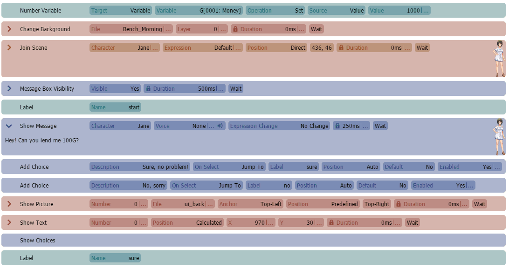
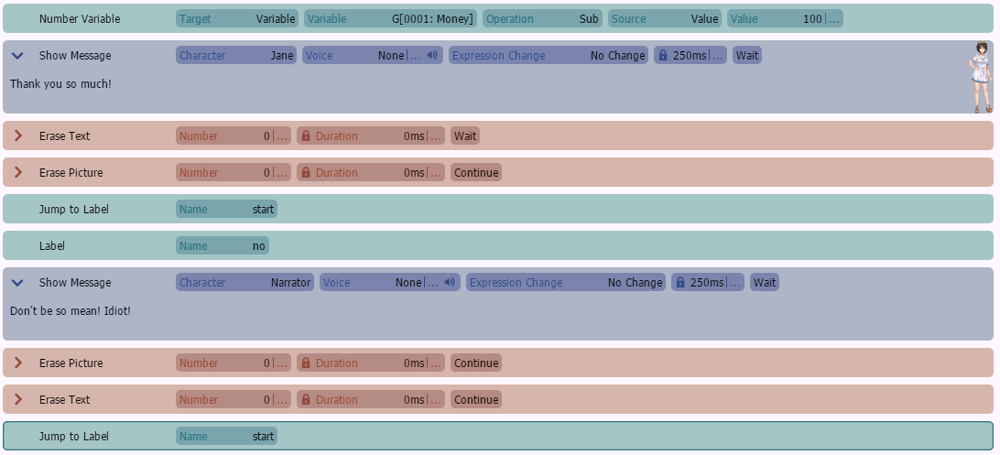
命令一遍又一遍地执行这些命令。我们接下来看看。
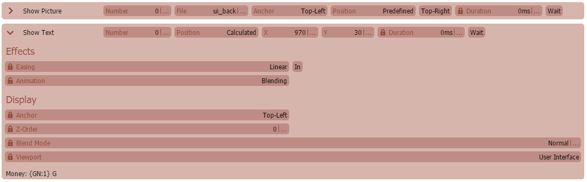
检测游戏中的通用元素
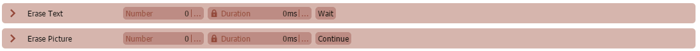
假设在我们的游戏中，主角有金钱，这是我们游戏的关键元素之一。因此，在某些场景中，我们想在屏幕的右上角显示角色的金钱数量。要存储金钱数量，我们将只使用一个全局数字变量并称之为“Money”。
在我们的一个场景中，我们可以轻松地使用以下命令在屏幕上显示金钱数量，然后在稍后将其隐藏。
这个例子起初看起来不错，我们使用
显示背景框，然后我们在其上方显示金钱数量。下面我们使用：
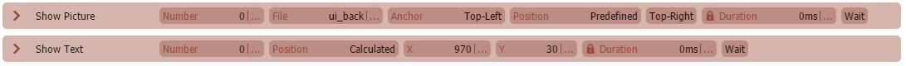
来隐藏它。但是如果我们想在其他场景中也显示和隐藏金钱数量呢？当然，我们可以复制粘贴，但是等等……如果我们以后想改变金钱显示的动画或行为呢？每当您有这种感觉时，这可能就是一个通用事件的好用例。所以让我们更有效地使用通用事件来解决这个情况。
创建通用事件
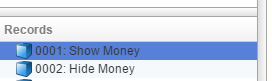
如果我们查看上面示例中的命令，我们可以识别出两个通用元素。
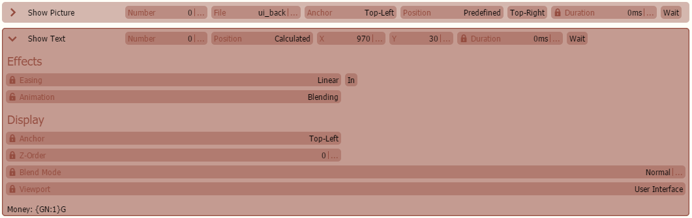
1. 显示当前金钱数量2. 隐藏当前金钱数量所以让我们在数据库中创建两个新的通用事件，并称它们为“显示金钱”和“隐藏金钱”。
让我们从“显示金钱”通用事件开始。首先，我们使用显示图片在屏幕的右上角显示一个框图像，这将是我们金钱显示的背景。我们使用以下图像：接下来，我们使用
显示文本
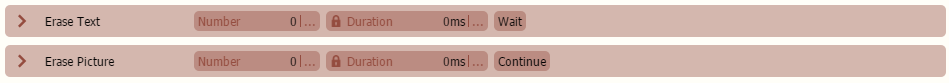
在背景框上方显示金钱数量。我们使用
文本代码
“{GN:1}”在屏幕上显示全局数字变量 1 的值，该变量包含角色的金钱数量。就是这样！
现在让我们看看“隐藏金钱”通用事件。
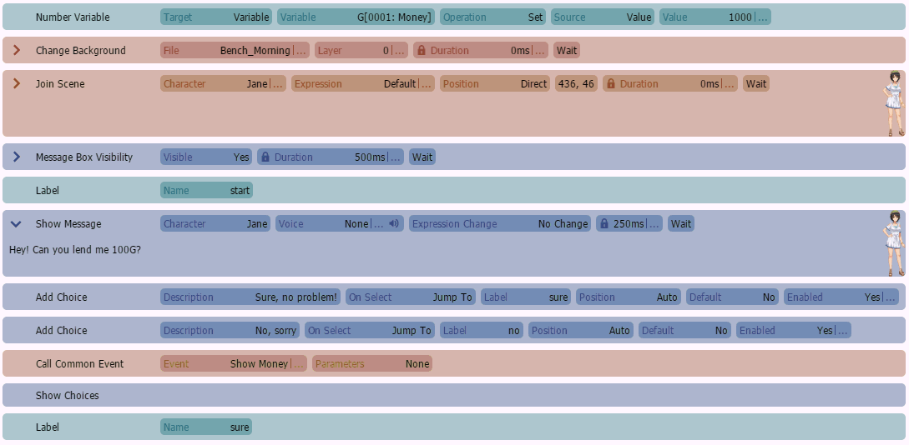
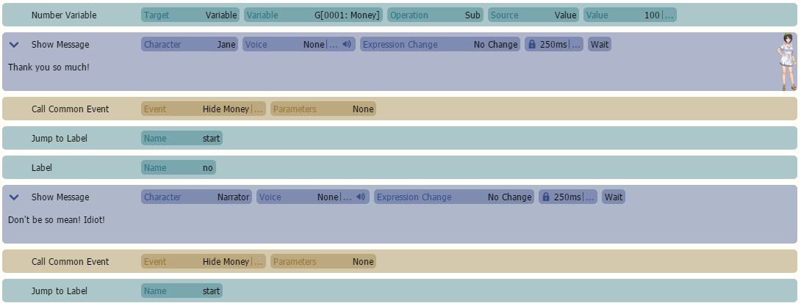
这里我们只是删除文本和图片，就这样。现在让我们将新创建的通用事件放入我们的场景中，而不是一遍又一遍地复制粘贴命令。调用通用事件
让我们回到我们的场景，用我们的通用事件替换复制粘贴的命令。
正如我们所见，我们使用
调用通用事件
命令来调用我们的通用事件。如果我们调用一个通用事件，该通用事件的命令将被执行，并且我们的场景将等待直到通用事件完成并执行了所有命令。还有许多更高级的设置和不同的方式来调用、使用和配置通用事件。
这样，我们的显示/隐藏功能现在就存储在数据库中的一个中心位置。因此，我们可以只编辑一次显示/隐藏金钱动画和显示，而无需遍历所有场景。
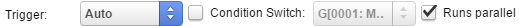
并行通用事件
在我们上一个示例中，我们学习了如何调用通用事件而不是复制粘贴命令块。在本示例中，我们将学习一种新的通用事件类型：并行通用事件，有时也简称为“并行进程”。
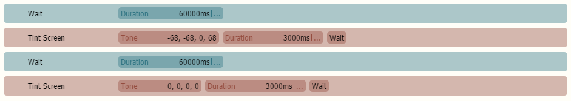
并行通用事件在后台独立于当前场景执行。它不需要直接调用，只要其运行条件满足，它就会永远循环运行。因此，并行通用事件可用于更复杂的视觉小说（如约会模拟游戏等）中所需的某些后台任务。让我们用一个新示例来尝试一下，一个非常简单的昼夜模拟。我们想要的是，在一定时间后，屏幕应该变暗蓝色，看起来像夜晚，然后一段时间后它会恢复正常。所以让我们创建一个名为“昼夜模拟”的新通用事件。我们可以看到这里我们选择了“自动”作为触发器，而不是“调用”。通过“自动”，我们表示通用事件应自动开始运行，无需任何显式调用。我们还勾选了“运行并行”复选框，以确保通用事件在不阻塞场景的情况下并行运行。让我们向其中添加以下命令。正如我们所看到的，我们首先使用
等待命令等待 60,000 毫秒，即一分钟。由于我们的通用事件是并行运行的，我们的场景不会被这个等待阻塞。等待时间结束后，我们使用屏幕色调命令缓慢地将屏幕调成深蓝色，类似夜晚的颜色，以模拟夜晚效果。色调完成后，我们的场景现在看起来就像夜晚。接下来，我们将使用
等待
命令再等待 60,000 毫秒，之后我们使用屏幕色调命令将屏幕恢复正常，以模拟白天。如果我们现在测试游戏，无论我们在哪个场景开始，屏幕将在 1 分钟后变暗，并在另外一分钟等待时间后恢复正常。这个周期将永远重复，因为并行通用事件将永远循环运行。由于我们没有设置任何条件，它将永远不会停止运行。要手动停止并行通用事件，可以使用
结束通用事件
命令。该命令立即停止通用事件执行，但不会重置其状态。但是，如果触发器是“自动”且未定义条件，通用事件将立即重新开始执行。要恢复已停止的通用事件，可以使用
恢复通用事件
命令。该命令将在通用事件停止处恢复执行，即使通用事件的条件不为真，也同样有效。
如果您现在查看数据库中的通用事件，您可能会注意到，“运行并行”设置也可以在触发器设置为“调用”时启用。在这种情况下，如果您使用“调用通用事件”，该调用将异步并行于场景执行，意味着“调用通用事件”命令不会阻塞场景，场景将立即继续。
参数化通用事件
在第一个示例中，我们学习了如何调用通用事件以避免复制粘贴常用命令块。虽然这已经非常强大了，但在此示例中我们将更进一步，调用一个带有所谓的“参数”的通用事件。带参数的通用事件可以看作是一个通用事件模板，您在其中放置某些值的占位符。这些占位符，也称为“参数”，在调用时被实际值替换。因此，当您调用通用事件时，您可以指定要放入占位符的值。
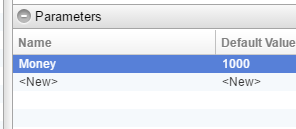
这在您创建几乎相同内容的通用事件但只有微小变化（如图片 ID、位置、持续时间值等）时非常有用。因为那样您就会遇到复制粘贴的问题，如果您有 10 个逻辑几乎相同的通用事件，如果有一个小的更改，您就必须全部更改它们。当然，在这种情况下，您可以创建大量全局变量并在通用事件内部访问它们。问题是，如果您处理一个巨大的项目，可能包含 100 或 1000 个不同的通用事件，您最终会得到 1000 多个不同的全局变量，并且您将很难保持对游戏的概览、维护游戏和修复错误。为了避免这种情况，VN Maker 提供了参数化通用事件。让我们接下来尝试一下！假设在我们的游戏中，每个主角都有金钱，并且根据我们的场景，我们想显示特定角色的金钱数量。我们想用一个参数化通用事件来解决这个问题，这样我们只需要告诉它哪个角色，然后通用事件就会在屏幕的右上角显示该角色的金钱数量。
所以，我们首先进入数据库并为我们的主要角色设置参数。
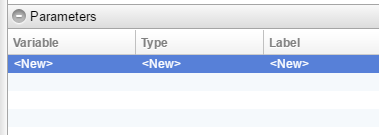
有关角色参数的更多信息，请阅读
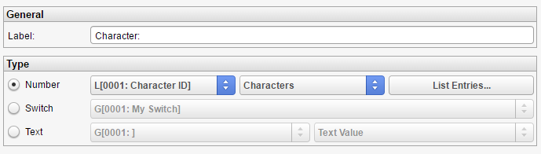
角色
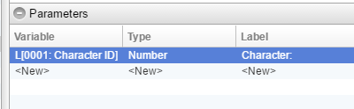
部分。
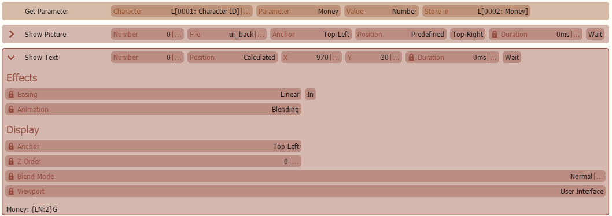
接下来，让我们稍微修改一下我们之前示例中的“显示金钱”通用事件。您可能已经注意到有一个“参数”部分。在这里，我们可以为通用事件设置所有参数。有许多不同的参数配置可用，但在我们的情况下，我们将其保持非常简单。我们只需要一个数字参数，即角色的 ID，所以我们通过双击“<新建>”来添加它。参数值通过其局部变量传递给通用事件。因此，如果我们想传递一个数字值，即角色的 ID，我们必须选择“数字”然后选择通用事件的一个局部数字变量来指定传递的角色 ID 存储在哪里，以便我们以后知道如何访问它。对于第二个选择框，我们选择“角色”而不是“数值”。区别在于，如果我们选择“角色”，参数输入弹出框将生成一个角色选择框，而不是一个数字输入字段。稍后调用通用事件时我们会看到这一点。
现在让我们稍微修改一下通用事件的命令。首先，我们使用获取参数命令从作为参数传递的角色那里获取金钱数量，并将其放入局部数字变量 0002“Money”中。不是直接选择角色，而是通过变量计算角色，并使用包含角色 ID 的参数的局部数字变量 0001“Character ID”。作为一个小提示：先选择参数“Money”，然后再通过变量计算角色。否则参数框将为空。接下来，我们显示背景图片，然后在
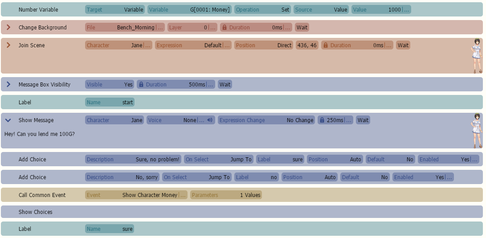
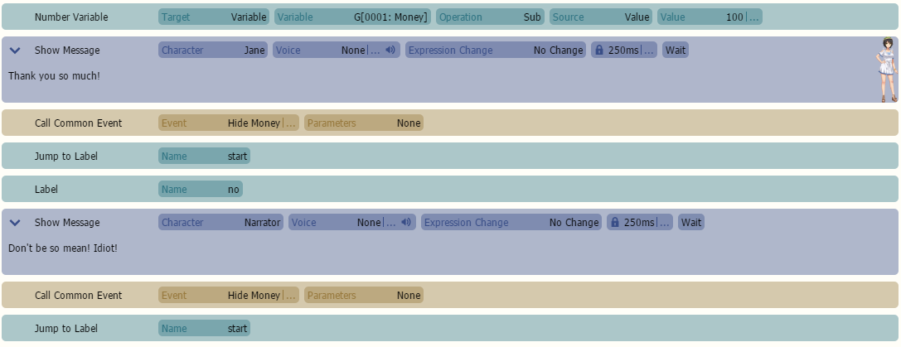
显示文本
命令中使用
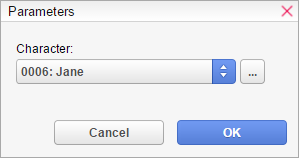
文本代码
{LN:2} 显示通用事件的局部数字变量 0002“Money”的内容，该变量存储着角色的金钱数量。就是这样，我们完成了，所以让我们保存项目并返回我们的场景。
如果查看“调用通用事件”命令，还有一个名为“参数”的第二个字段。
如果您点击它，将出现一个对话框，允许您指定通用事件的参数值。
由于我们只定义了一个数字参数，对话框仅显示一个数字字段“角色:”。由于我们在参数设置中选择了“角色”，因此“数字字段”显示为一个角色选择框，这使得选择角色更容易。我们现在可以只选择我们想要的字符，甚至可以通过变量计算该参数值（如果我们点击“...”按钮）。指定参数值后，我们可以再次测试游戏，看看一切是否如前所述工作。
不幸的是，这个例子有点过度，因为我试图让这个指南保持简单。它更多地是为了向您展示如何使用参数化事件来处理您自己更复杂的情况。作为提示：如果您最终因为微小的变化而复制通用事件，请考虑参数化通用事件是否可以解决问题。
内联通用事件
由于内联通用事件的命令是在运行时复制并粘贴的，因此不再有额外的性能开销。然而，这种优化也有一些缺点。
在内联通用事件中使用的局部变量会引用场景/根的局部变量，因为命令只是在运行时复制并粘贴的。因此，如果您不确定使用了哪些局部变量，只需想象一下如果您只是复制并粘贴命令会发生什么。
如果您使用参数，则通用事件不能是内联的。
如果通用事件包含任何直接或间接递归，意味着通用事件或其某个子调用再次调用自身，则它不能是内联的。
基本上，当通用事件被非常频繁地调用（例如在循环中调用 1000 或 0 次）时，内联通用事件很有用。否则，它的意义不大，因为常规通用事件调用的性能开销非常小。
单一实例与多个实例
您可能注意到数据库中每个通用事件的“单一实例”复选框，该复选框默认始终选中。